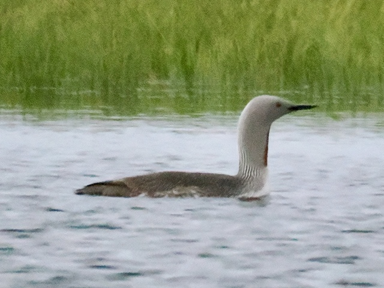

Red-Throated Loon
Gavia stellata
Other names: Red-Throated Diver
Order: Gaviiformes
Family: Gaviidae

A small loon. In breeding plumage, has a grey body and red throat. I have always admired the fine lines on the bodies of loons. How can feathers alone create such orderly patterns?